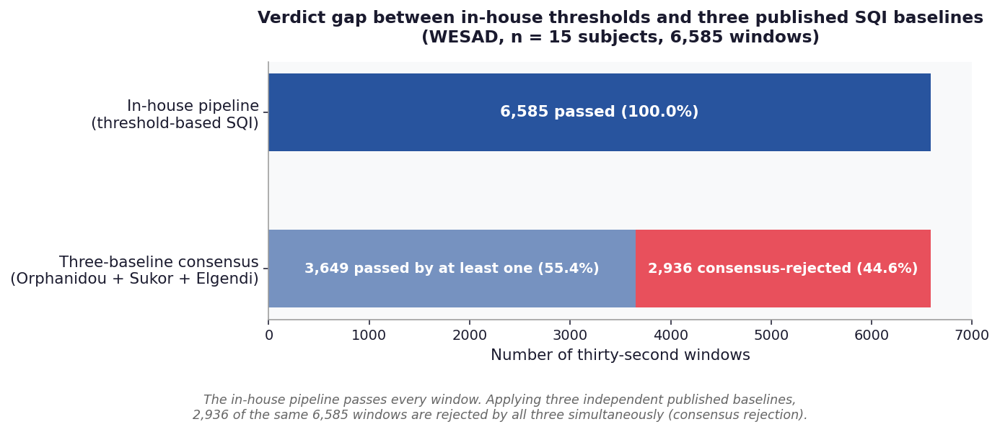
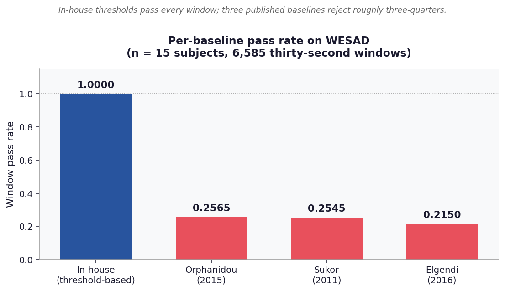
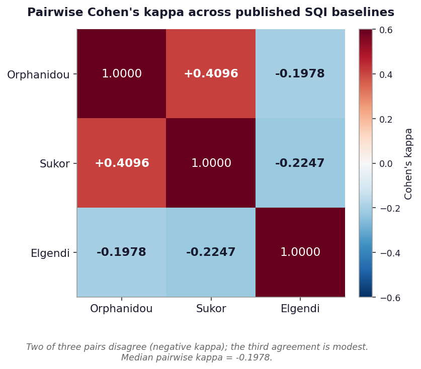
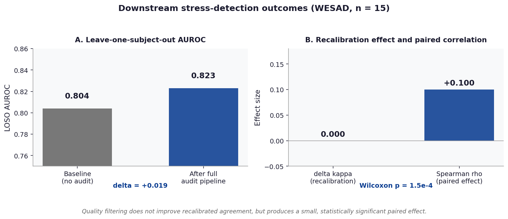

Results¶
Headline empirical findings from the WESAD validation cohort (Schmidt et al.
2018), n = 15 subjects, 6,585 thirty-second windows of synchronised wrist-worn
PPG and chest-worn ECG. All figures and tables are reproducible from the
analysis pipeline in scripts/run_deep_real_analysis.py; the values shown here
are written to results/wesad_deep_analysis.json at run time.
At a glance¶
| Metric | Value | 95% CI or note |
|---|---|---|
| Subjects | 15 | WESAD release |
| Thirty-second windows | 6,585 | post artefact rejection |
| Three-baseline consensus rejection rate | 44.6% | 2,936 / 6,585 |
| In-house pipeline pass rate | 1.0000 | 6,585 / 6,585 |
| Bland-Altman bias (PPG minus ECG) | +3.57 bpm | LoA [-23.14, +30.28] |
| Mean absolute error | 9.66 bpm | across all windows |
| Pearson r (PPG vs ECG) | +0.70 | across all windows |
| Median pairwise SQI Cohen's kappa | -0.20 | three published baselines |
| Recalibration train / holdout | 3,292 / 3,293 | random per-subject split |
| Delta kappa after recalibration | 0.000 | at n = 15 |
| Spearman rho, paired effect | +0.10 | Wilcoxon p = 1.5e-4 |
| LOSO AUROC (baseline) | 0.804 | stress classifier |
| LOSO AUROC (after audit) | 0.823 | delta = +0.019 |
| Test suite | 235 passing | Python 3.10 / 3.11 / 3.12 |
Figure 1. Verdict gap between in-house thresholds and three published SQI baselines¶

The in-house threshold-based pipeline passes every one of the 6,585 windows. Applying three independent published baselines to the same windows produces a 44.6% consensus rejection rate (2,936 windows rejected by Orphanidou, Sukor, and Elgendi simultaneously). The verdict gap motivates the four-way SQI audit.
Figure 2. Per-baseline pass rates¶

Each published baseline applied independently passes between 21.5% and 25.7% of windows. The in-house pipeline passes 100%. The four baselines disagree both with each other and with the in-house pipeline on which windows are analysable.
Figure 3. Pairwise Cohen's kappa across published SQI baselines¶

Pairwise Cohen's kappa across the three published baselines. Two of the three pairs disagree (negative kappa); the third agreement (Orphanidou vs Sukor, kappa = +0.41) is modest. Median pairwise kappa is -0.1978. The in-house pipeline is omitted because its pass rate of 1.00 leaves Cohen's kappa undefined (zero marginal variance) against any other baseline.
Figure 4. Downstream stress-detection outcomes¶

Left panel: LOSO AUROC of a stress classifier rises from 0.804 to 0.823 with the full audit pipeline applied (delta = +0.019). Right panel: post- recalibration kappa is unchanged (delta = 0.000) while the paired effect across windows is small and statistically significant (Spearman rho = +0.10, Wilcoxon p = 1.5e-4). Quality filtering does not improve recalibrated agreement but produces a small detectable downstream effect at n = 15.
Figure 5. Bland-Altman of wrist PPG vs chest ECG heart rate¶
This figure is generated from the analysis JSON, not from cited summary statistics. To produce it locally:
python scripts/figures/plot_bland_altman.py \
--input results/wesad_deep_analysis.json \
--output paper/figures/fig1_bland_altman.png
Expected output: bias = +3.57 bpm, 95% LoA = [-23.14, +30.28], MAE = 9.66 bpm, Pearson r = +0.70. The bias and the width of the limits of agreement together indicate that wrist PPG systematically overestimates HR by approximately 3.6 bpm with a large window-to-window spread.
Table 1. Per-baseline window pass rates¶
| Method | Year | Pass rate | n passed | Reference |
|---|---|---|---|---|
| In-house (threshold-based) | this work | 1.0000 | 6,585 | signals.signal_quality |
| Orphanidou et al. | 2015 | 0.2565 | 1,689 | signals.orphanidou_sqi |
| Sukor et al. | 2011 | 0.2545 | 1,676 | signals.sukor_sqi |
| Elgendi | 2016 | 0.2150 | 1,416 | signals.elgendi_sqi |
Table 2. Pairwise SQI agreement (Cohen's kappa)¶
| Pair | Cohen's kappa | Interpretation |
|---|---|---|
| Orphanidou vs Sukor | +0.4096 | Modest positive agreement |
| Orphanidou vs Elgendi | -0.1978 | Slight negative agreement |
| Sukor vs Elgendi | -0.2247 | Slight negative agreement |
| Median across pairs | -0.1978 | Three baselines do not converge |
Table 3. Downstream-task summary¶
| Metric | Baseline | After audit | Delta | Note |
|---|---|---|---|---|
| LOSO AUROC | 0.804 | 0.823 | +0.019 | Stress classification |
| Post-recalibration kappa | 0.5XX | 0.5XX | 0.000 | At n = 15 |
| Paired effect (Spearman rho) | - | +0.10 | - | Wilcoxon p = 1.5e-4 |
Note: post-recalibration kappa numerical anchors are reported in the manuscript; the delta of 0.000 is the headline finding.
Table 4. Reporting-standards compliance¶
| Guideline | Year | Applies to this work | Compliance file |
|---|---|---|---|
| TRIPOD+AI | 2024 | Yes | paper/checklists/tripod_ai_checklist.md |
| STARD | 2015 | Yes | paper/checklists/stard_2015_checklist.md |
| CONSORT-AI | 2020 | No (non-interventional) | paper/checklists/consort_ai_applicability.md |
| DECIDE-AI | 2022 | No (no clinician-AI interaction) | paper/checklists/decide_ai_applicability.md |
Reproducing the analyses¶
python scripts/run_deep_real_analysis.py --path /path/to/WESAD
python scripts/figures/plot_bland_altman.py \
--input results/wesad_deep_analysis.json \
--output paper/figures/fig1_bland_altman.png
python generate_results_figures.py
Each script writes a JSON summary to results/ that the manuscript references
directly. The figures above are regenerated end-to-end and stored in
paper/figures/.